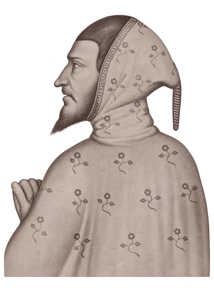
Les artistes
Un nom, une œuvre, une manière de voir.
Choisissez le regard que vous avez envie de découvrir.
Un ordre de lecture fondé sur les premiers grands apports des artistes, toutes disciplines confondues. Leurs carrières se chevauchent : il ne s’agit pas d’un classement par date de naissance.
17 artistes à découvrir
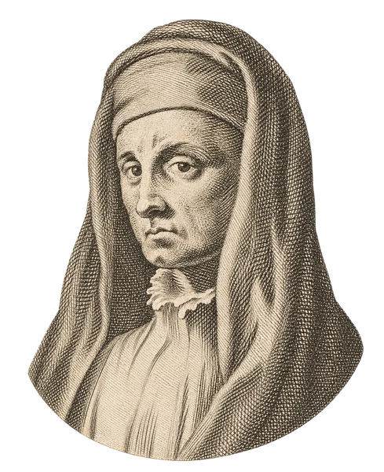
Peinture
Giotto
Vers 1267 – 1337
Les récits prennent corps, les gestes deviennent des émotions.
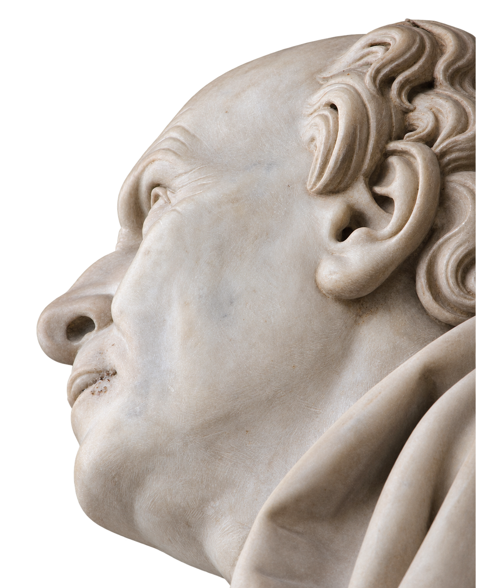
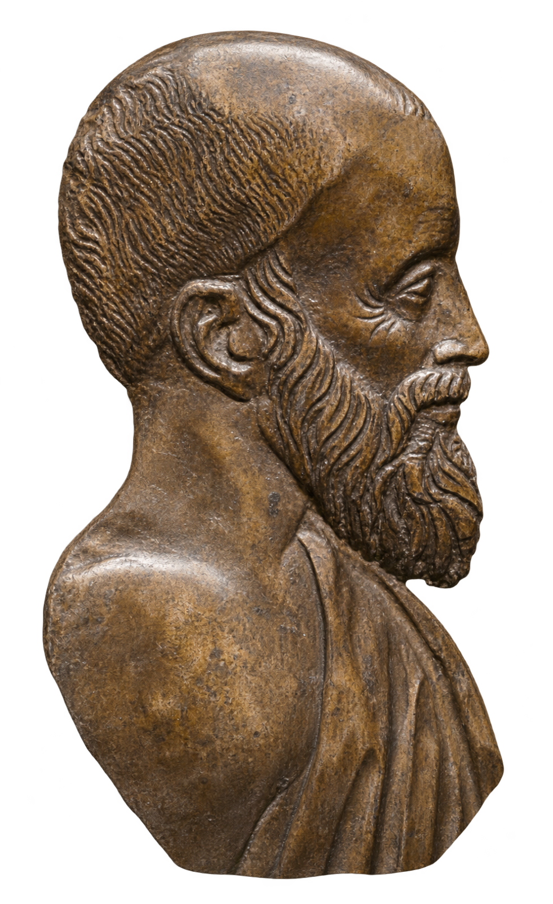
Sculpture
Donatello
Vers 1386 – 1466
La sculpture explore les corps, le relief et l’expression.
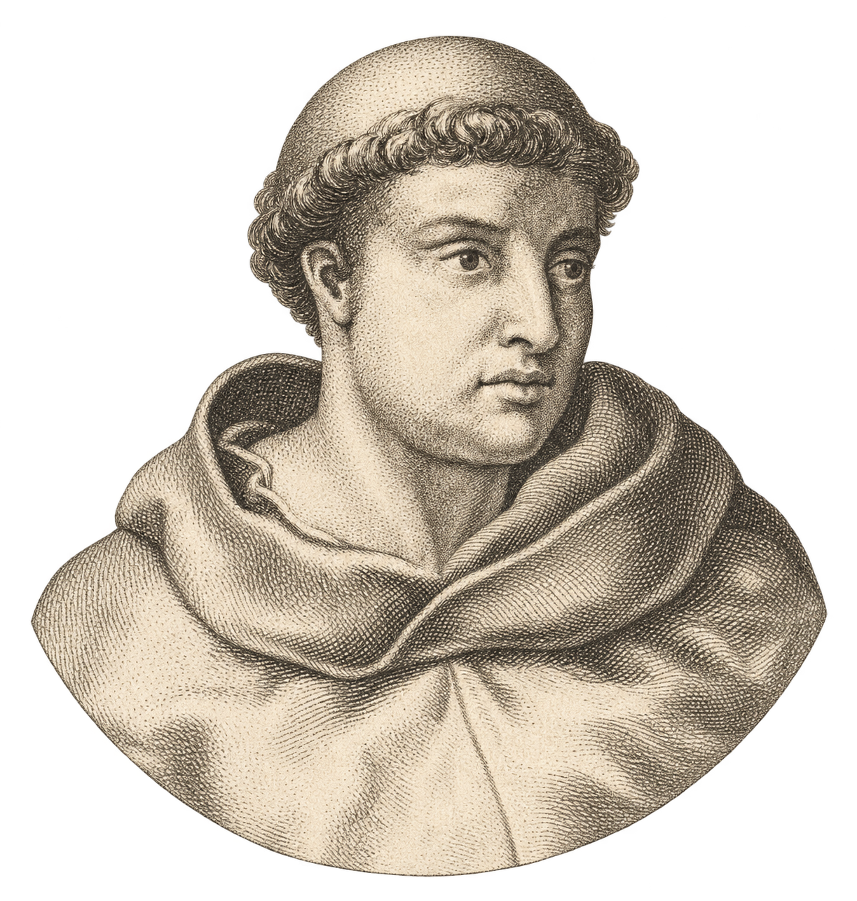
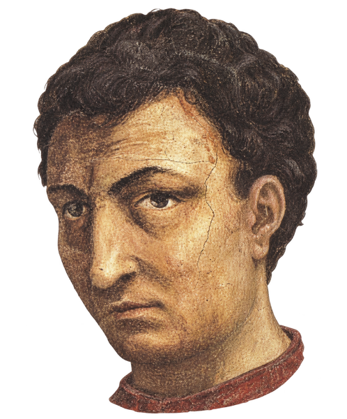
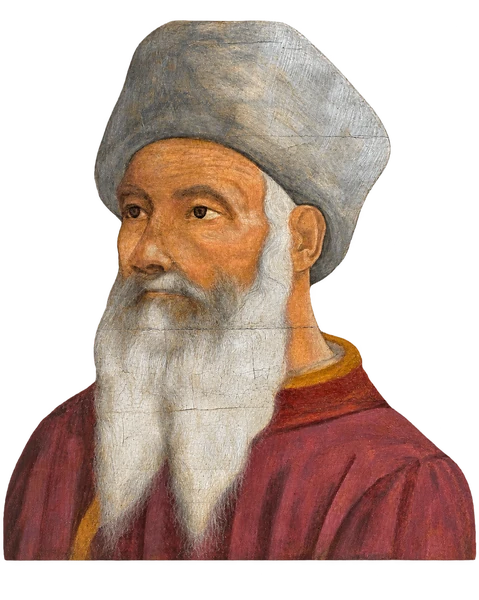
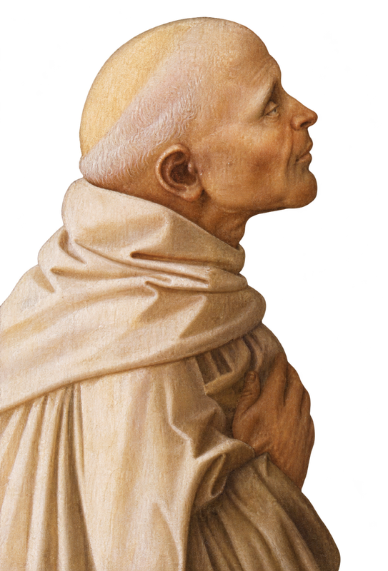
Peinture
Fra Filippo Lippi
Vers 1406 – 1469
Un moine peintre qui donnait aux figures du paradis les visages de la vie.
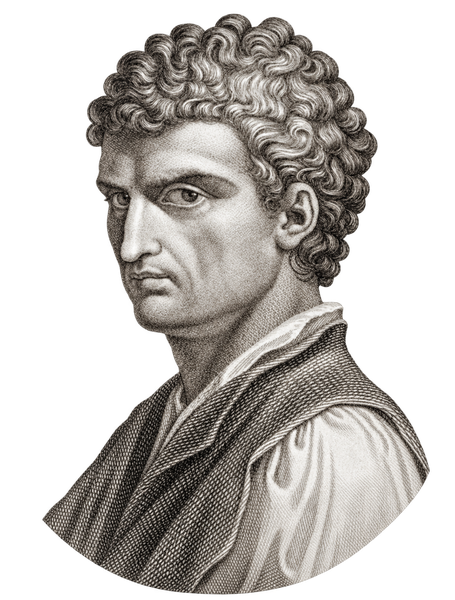
Architecture
Leon Battista Alberti
1404 – 1472
L’Antiquité devient un langage pour inventer.
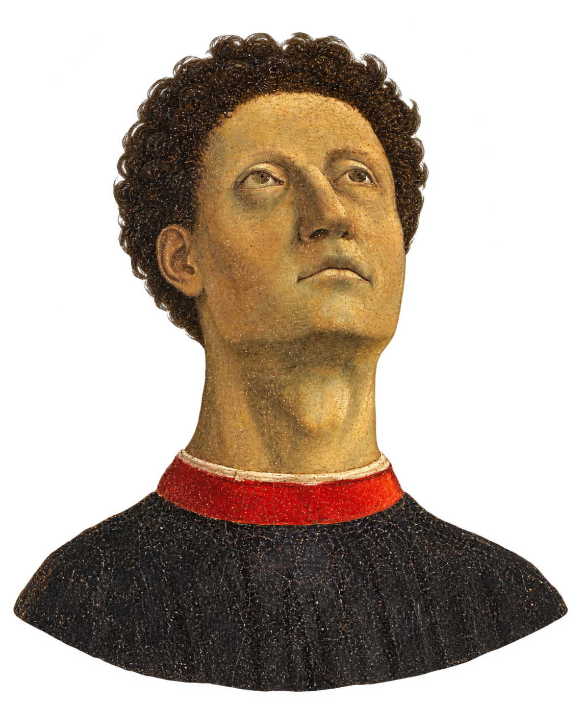
Peinture
Piero della Francesca
Vers 1415–1420 – 1492
Un monde mesuré, des récits mystérieux.
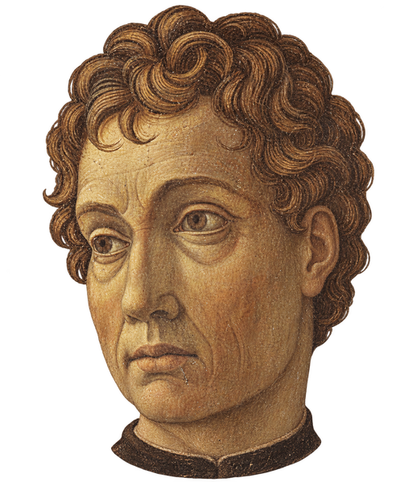
Peinture
Andrea Mantegna
Vers 1431 – 1506
Des perspectives audacieuses, des corps sculpturaux et une Antiquité pleine de surprises.
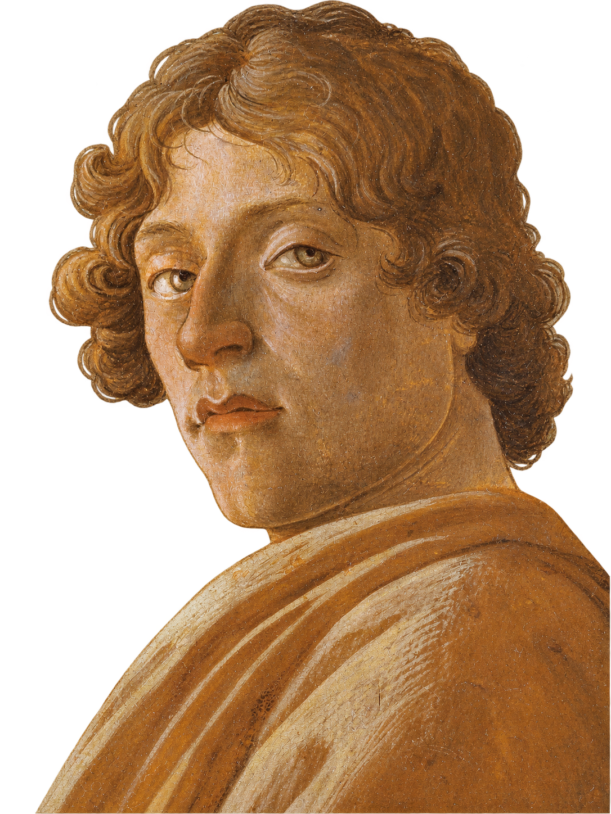
Peinture
Sandro Botticelli
1445 – 1510
Des lignes qui font danser les corps, entre mythologie, désir et pouvoir.
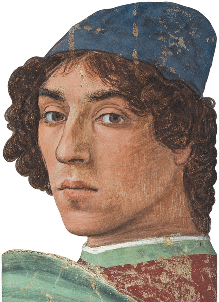
Peinture
Filippino Lippi
vers 1457–1504
Élève de Botticelli, Filippino Lippi fait entrer le trouble et la fantaisie dans la Renaissance florentine.
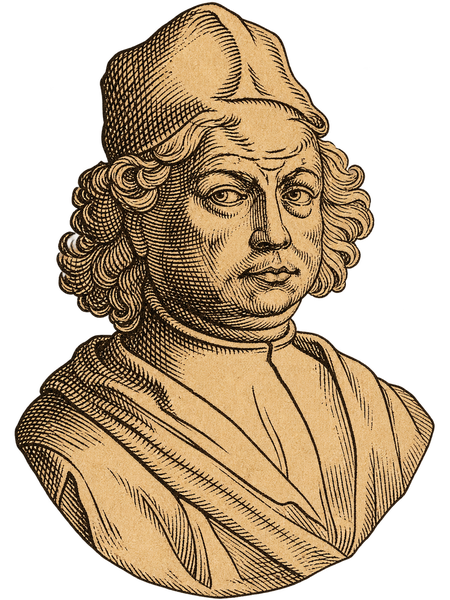
Peinture
Andrea del Verrocchio
Vers 1435, Florence – 1488, Venise
« Il donne vie au bronze, fait parler les gestes et forme l'un des plus grands génies de la Renaissance. »
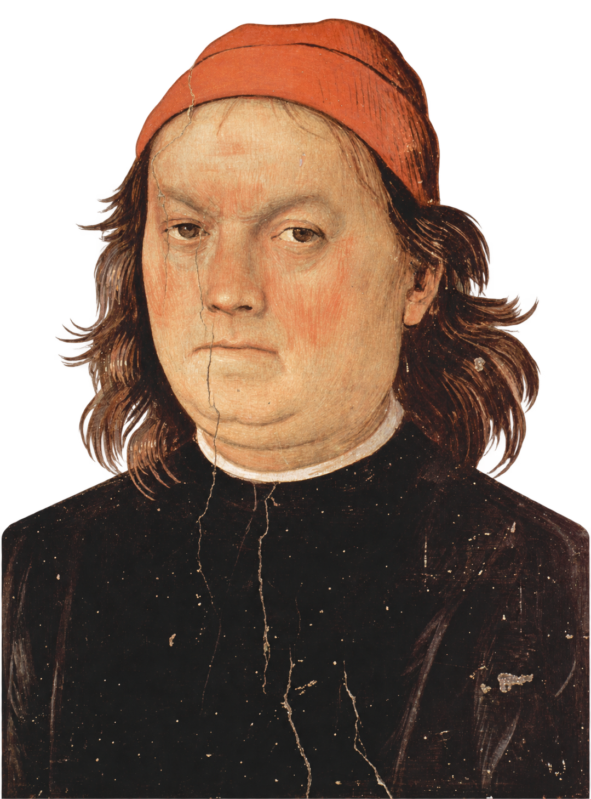
Peinture
Pietro Vannucci, dit Le Pérugin
Vers 1450–1523
Des gestes mesurés, des visages paisibles, des paysages qui respirent : chez Le Pérugin, tout semble trouver sa juste place.
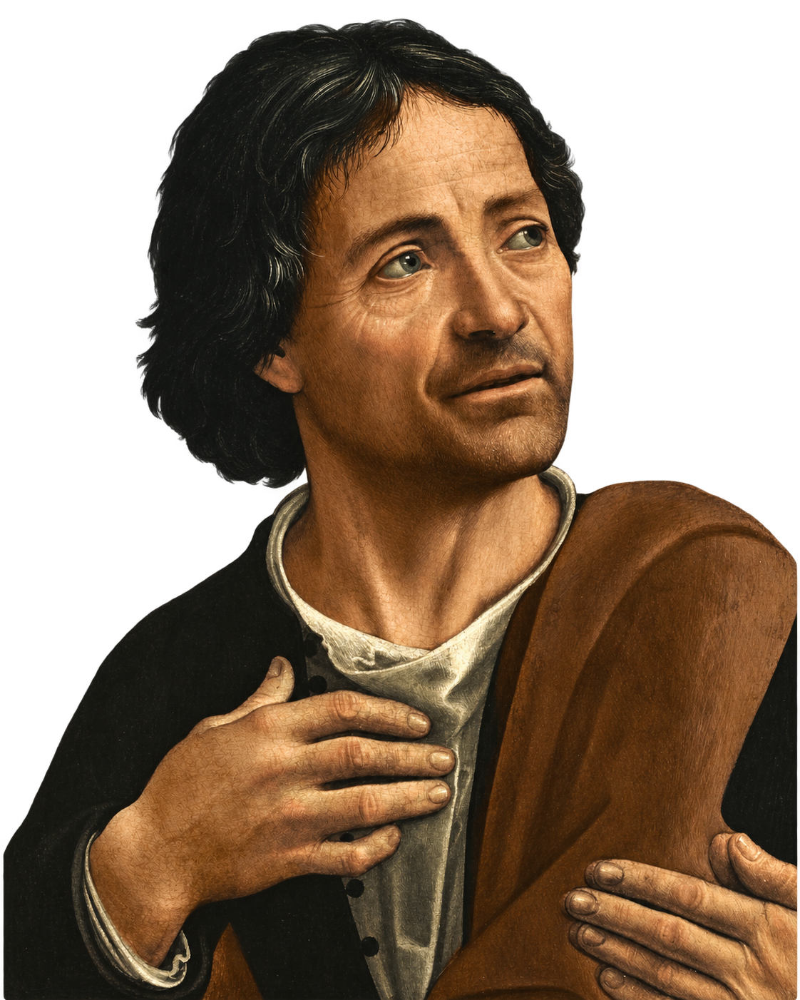
Peinture
Domenico Ghirlandaio
1449–1494
Une naissance, un drame, un miracle, un regard : Ghirlandaio transforme la peinture en récit et donne aux histoires sacrées les visages de son temps.
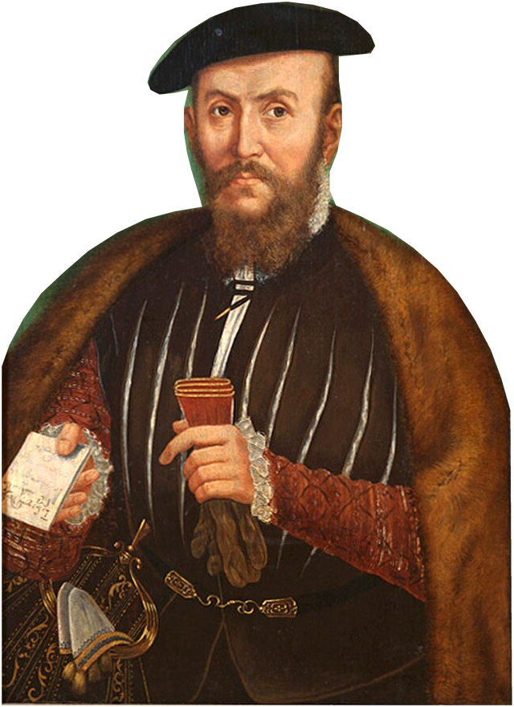
Peinture
Léonard de Vinci
1452–1519
Un visage qui se tourne, une main qui hésite, une émotion qui se propage : Léonard observe le visible pour suggérer la vie intérieure.
Aucun artiste pour cette recherche
Essayez un autre nom ou changez de discipline.
Les illustrations et leurs crédits sont ceux des fiches du site. Sources et crédits ↗